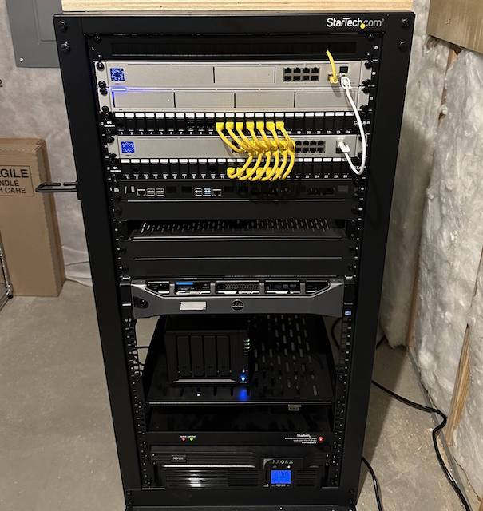
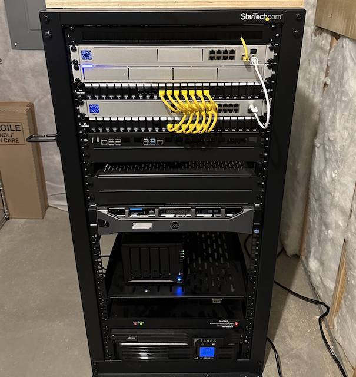

For a while, I have seen tech YouTubers talking about having homelabs, which is just running servers at home and it gave me an idea to have my own one as well.
Basically, I will be putting things that require a lot of computer resources inside a virtual machine in a server. Then on a low-powered device, I could easily remote into it. The server will also host other services as well such as a media server, storing photos, and other things.
These days, way more people rely on big tech to manage their lifes, and I wanted to move away from that idea. So around 2018/19, I decided to slowly move away from it, starting with emails.
So, you won't really need a massive tower on your desk for doing intensive tasks, for example, I could bring a low-powered device and just plug a single cable that powers my entire setup (connects to keyboard, mouse, monitor, and ports). After that, I could remote into the virtual machine and do high intensive stuff on it like gaming or video editing.
Current Homelab